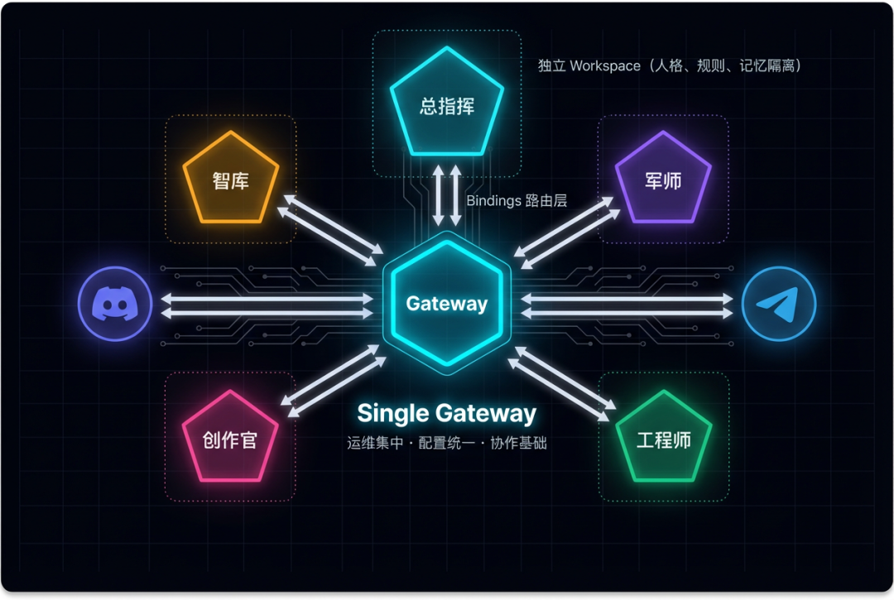
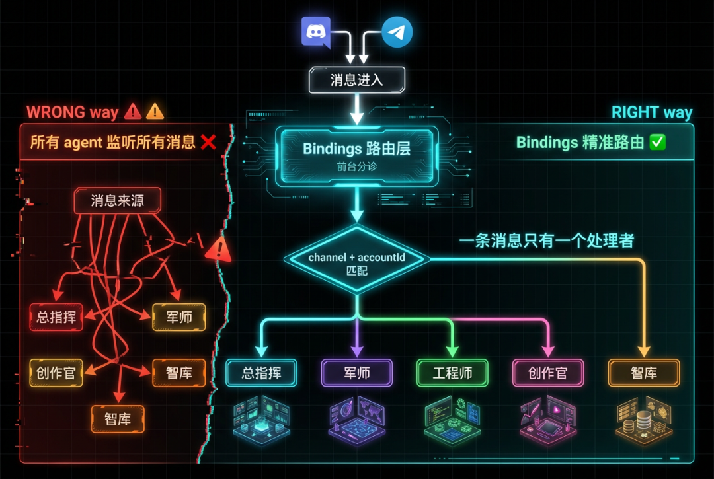
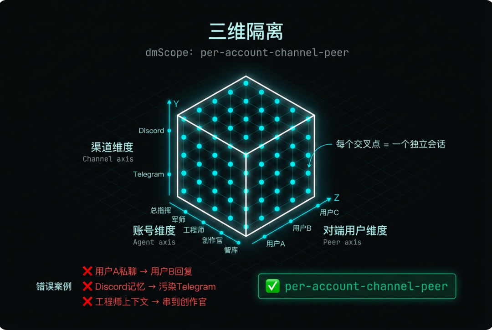
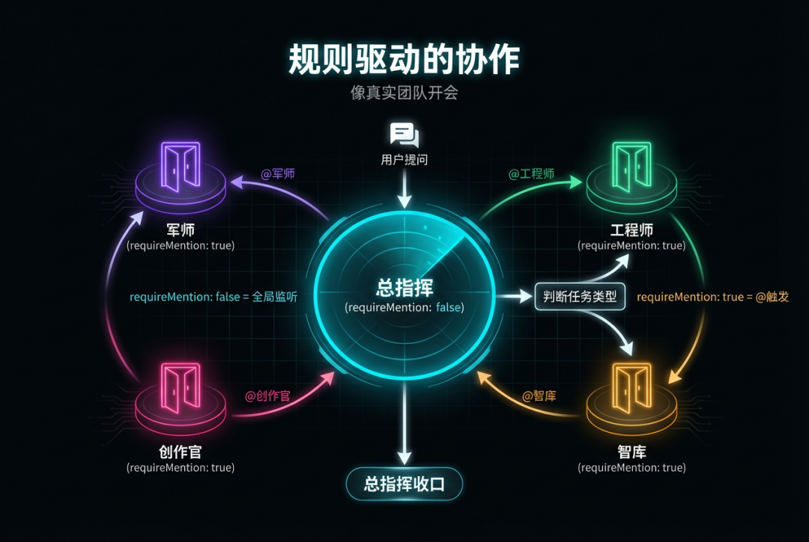
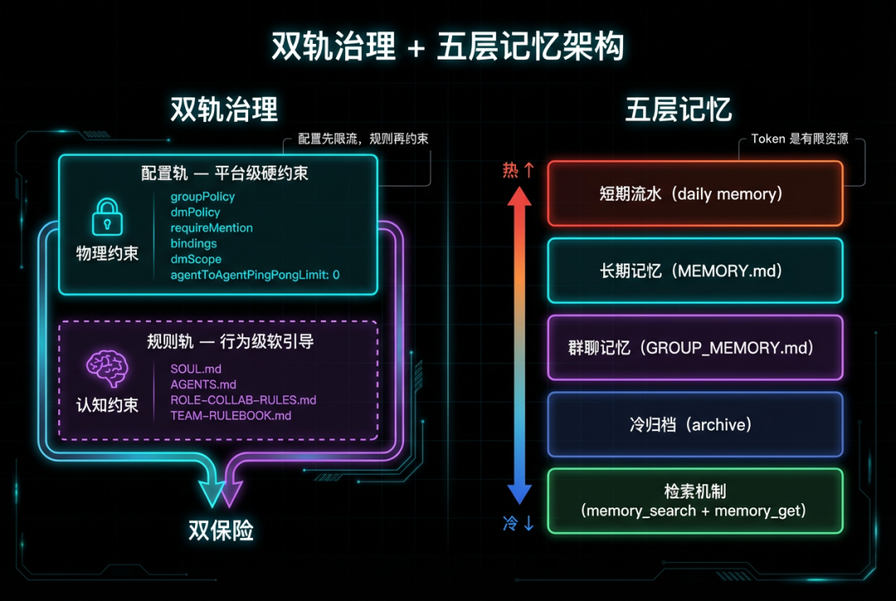
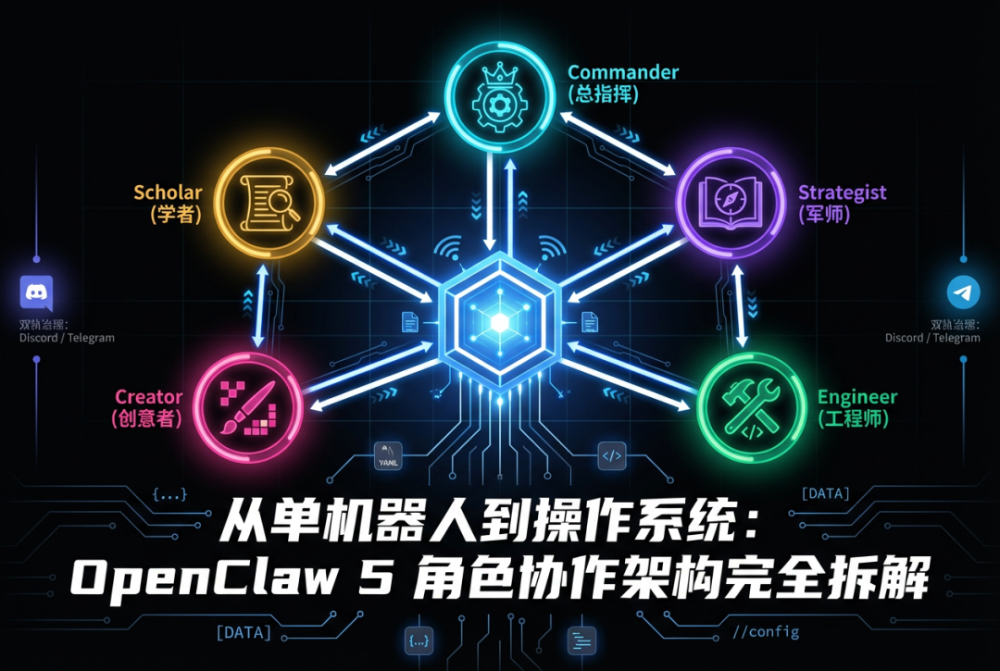

大多数人理解的"多 Agent"：开 5 个 bot，各聊各的。
这不叫多 Agent，这叫多个单机器人。
真正的多 Agent 系统有组织、有协议、有记忆隔离 —— 像一个团队在协作，而不是五个人在各自对着墙说话。
这篇文章拆解的是我用 OpenClaw 搭建的 5 角色协作系统的完整架构。从路由层到记忆系统，从会话隔离到群聊编排，每一层都是真实踩坑后的工程决策。不是 demo，不是概念验证，是正在跑的系统。
一、总体架构：Single Gateway + Multi-Agent
先看全貌：
单个 Gateway 进程
├── 5 个独立 Agent（总指挥、军师、工程师、创作官、智库）
├── Discord + Telegram 双通道
├── Bindings 路由层
└── 独立 Workspace（人格、规则、记忆隔离）为什么选择单 Gateway？
三个理由：
1. 运维集中 —— 一个进程管理所有角色，不用开 5 个服务 2. 配置统一 —— 一份总配置文件，不用到处同步 3. 协作基础 —— 同一运行时才能高效通信，跨进程通信的复杂度不是你想踩的坑
5 个角色的职责划分：
• 总指挥 —— 态势感知、任务拆解、派工、收口 • 军师 —— 策略分析、方案评估、风险预判 • 工程师 —— 技术执行、代码实现、系统维护 • 创作官 —— 内容创作、表达优化、对外输出 • 智库 —— 知识审核、质量把关、合规检查
关键是：每个角色有明确的边界。不是"谁都能干"，是"谁该干什么"。

二、路由层：Bindings 的精准映射
这是整个系统的"前台分诊"。
bindings:
- channel: discord
accountId: zongzhihui
agentId: zongzhihui
- channel: discord
accountId: engineer
agentId: engineer
- channel: telegram
accountId: zongzhihui
agentId: zongzhihui
- channel: telegram
accountId: engineer
agentId: engineer
# ... 共 10 条映射（5 角色 × 2 渠道）设计原理：入口层就决定"谁处理这条消息"。
不是让所有 agent 听到后抢答 —— 那会乱成一锅粥。Bindings 就是系统的前台，消息进来先分诊，直接送到对的人手里。
# 错误做法：所有 agent 监听所有消息
all_agents.forEach(agent => agent.listen(message)) # ❌ 会导致抢答混乱
# 正确做法：通过 bindings 精准路由
target_agent = bindings.route(message.channel, message.account_id)
target_agent.handle(message) # ✅一条消息只有一个处理者。这条规则听起来简单，但很多多 Agent 系统在这一步就翻车了。

三、会话隔离：per-account-channel-peer 策略
session:
dmScope: per-account-channel-peer就这一行配置，解决了多 Agent 系统最头疼的问题 —— 上下文串台。
三维隔离：
• 账号维度 —— 哪个 agent 在处理 • 渠道维度 —— Discord 还是 Telegram • 对端用户维度 —— 谁在聊天
三个维度交叉，意味着：
• 同一人通过不同渠道找同一角色 → 上下文不串 • 不同用户找同一角色 → 完全隔离 • 多 agent + 多账号场景 → "错串"风险降到最低
没有这层隔离会发生什么？
❌ 用户 A 的私聊内容出现在用户 B 的回复里
❌ Discord 的对话记忆污染 Telegram 的上下文
❌ 工程师的技术讨论串到创作官的写作上下文里这不是理论风险，是我真实踩过的坑。

四、群聊编排：规则驱动的协作
群聊是多 Agent 协作的主战场。核心策略只有一条：
总指挥全局监听，其他角色 @ 触发。
agents:
zongzhihui:
channels:
discord:
requireMention: false # 全局监听，不需要 @
engineer:
channels:
discord:
requireMention: true # 必须 @
mentionPatterns:
- "@工程师"
- "@engineer"
junshi:
channels:
discord:
requireMention: true
mentionPatterns:
- "@军师"
- "@junshi"协作流程是这样的：
1. 用户在群里提问 2. 总指挥监听到，判断任务类型 3. 总指挥 @ 对应角色处理 4. 角色完成后，总指挥收口
效果就像一个真实团队在开会 —— 有主持人（总指挥），有分工（其他角色），有结论（收口）。不是 5 个 AI 在自由聊天。

五、双轨治理：配置层 + 规则层
模型会犯错、会漂移、会忘记规则。一层约束不够，必须双轨。
配置轨（平台级硬约束）：
groupPolicy: open
dmPolicy: allowlist
requireMention: true/false
bindings: [...]
dmScope: per-account-channel-peer
agentToAgentPingPongLimit: 0 # 🔥 关键：防止 agent 互相客套循环这些是平台层面的硬限制，模型绕不过去。
规则轨（行为级软引导）：
SOUL.md | |
AGENTS.md | |
ROLE-COLLAB-RULES.md | |
TEAM-RULEBOOK.md | |
TEAM-DIRECTORY.md |
为什么需要双轨？
配置层先限流 —— 你物理上做不到越界。规则层再约束 —— 即使你能做到，也知道不该做。双保险。
其中 agentToAgentPingPongLimit: 0 这个配置特别关键。没有它，两个 AI 会无限互相客套："你做得很好" → "谢谢夸奖" → "不客气" → 死循环。
六、Workspace 文件体系
每个角色有自己的独立 Workspace：
workspace-engineer/
├── SOUL.md # 角色灵魂
├── AGENTS.md # 运行手册
├── ROLE-COLLAB-RULES.md # 协作边界
├── IDENTITY.md # 身份定义
├── USER.md # 用户画像
├── TOOLS.md # 工具清单
├── MEMORY.md # 长期记忆
├── GROUP_MEMORY.md # 群聊记忆
├── HEARTBEAT.md # 心跳规范
└── memory/
├── 2026-03-15.md # 每日流水
└── 2026-03-16.md为什么要标准化？
• 每个角色结构一致 → 易维护 • 新增角色直接复制模板 → 可扩展 • 文件职责清晰 → 不会混乱
想象一下 5 个角色各用各的结构 —— 维护成本会指数级增长。标准化是多 Agent 运维的前提。
七、记忆系统：懒加载 + 分层 + 归档
记忆是多 Agent 系统里最容易失控的部分。
五层记忆架构：
1. 短期流水（daily memory） —— 当天任务、上下文碎片 2. 长期记忆（MEMORY.md） —— 稳定偏好、可复用经验 3. 群聊记忆（GROUP_MEMORY.md） —— 只保留群里可复用的信息 4. 冷归档（archive） —— 老数据定期归档 5. 检索机制（memory_search + memory_get） —— 语义召回 + 精确读取
核心价值：隔离。
• 私聊质量不被群聊历史污染 • 群聊协作不被个人私密上下文干扰 • 上下文窗口"按需加载"，不是"全量灌入"
开发者思维：Token 是有限资源。 每条记忆都在占用推理空间。你不会把公司所有历史会议纪要全塞进一个会议室 —— 记忆系统也一样，必须精打细算。


八、私聊 vs 群聊：同一角色的双重人格
同一个工程师角色，在私聊和群聊里表现完全不同：
以工程师为例：
• 私聊 → 给出完整技术方案 + 代码 + 测试 • 群聊 → 只负责技术实现部分，方案由军师给，验收由智库做
这不是功能切换，是角色认知的切换。同一个角色在不同场景下知道自己该做多少、该做什么。
九、Discord vs Telegram：为什么 Discord 是主战场
不是因为 Discord 更好用，是因为它更适合多 Agent 协作。
Discord 的优势：
• 5 账号并行 + 明确 @ 机制 • 角色身份可见、对话链可见 • 总指挥监听 + mention gate 更直观 • groupPolicy = open，灵活性高
Telegram 的定位：
• allowlist + mention gate，更收敛• 适合"受控生产通道" • 不是不能协作，而是我配置成了不同策略
两个渠道不是重复，是互补。
十、踩过的坑与解决方案
坑 1：Agent 互相客套循环
问题：两个 AI 无限确认 —— "你做得很好" → "谢谢" → "不客气" → 死循环。
解决：agentToAgentPingPongLimit: 0，直接从配置层掐死。
坑 2：上下文串台
问题：用户 A 的私聊内容出现在用户 B 的回复里。
解决：dmScope: per-account-channel-peer，三维隔离。
坑 3：群聊抢话混乱
问题：5 个角色同时回复，信息爆炸。
解决：总指挥全局监听，其他角色 requireMention: true。
坑 4：记忆膨胀失控
问题：上下文窗口被历史记忆占满，推理质量断崖下降。
解决：分层记忆 + 懒加载 + 定期归档。
坑 5：配置漂移
问题：规则写了但模型不遵守，时间一长开始自由发挥。
解决：配置层 + 规则层双轨治理。配置是物理约束，规则是认知约束。
写在最后
多 Agent 不是"多开几个 bot"的事。它是完整的工程系统 ——
架构层决定消息怎么流转。路由层决定谁来处理。隔离层决定上下文不串台。编排层决定谁先谁后。记忆层决定信息怎么存取。治理层决定边界在哪。
每一层都需要认真设计，少一层就是一个生产事故。
OpenClaw 提供了一个很好的底座，但工程量比想象大得多。好消息是，一旦把这套架构跑通，你拿到的不是一个聊天机器人 —— 是一个有分工、有协作、有记忆的 AI 团队操作系统。
下一步？ 选一个场景 —— 客服、研究、创作 —— 深入实践。架构是通用的，场景决定价值。
我们 AI Hour 社群一直在探索 AI 前沿的玩法和实践，欢迎加入 AI Hour 社群，每周一个新的 AI 玩法